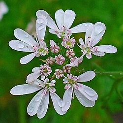

About Coriandrum
Coriandrum sativum, commonly known as coriander or cilantro, is a fragrant herb widely used in cooking
and traditional medicine. It is rich in antioxidants, vitamins, and essential oils that provide
numerous beauty and health benefits.
Beauty Benefits
- 🌿 It's paste helps reduce acne and skin inflammation.
- 🌿 It's face masks acts as a natural skin cleanser.
- 🌿 It's scrubs Brightens dull skin and improves complexion.
- 🌿 Reduces dark spots and pigmentation.
- 🌿 It's flavoured edible powder contains antioxidants that slow down skin aging.
Herbal & Health Benefits
- 🌿 It's raw leaves improves digestion and reduces bloating.
- 🌿 helps control blood sugar levels.
- 🌿 Boosts immunity.
- 🌿 Detoxifies the body naturally.
- 🌿 Supports heart health.
Traditional Uses
Coriander seeds and leaves are used in herbal teas, oils, and natural remedies.
It has been used in Ayurveda and traditional medicine for centuries to treat
digestive problems and skin disorders.
Purchase the products